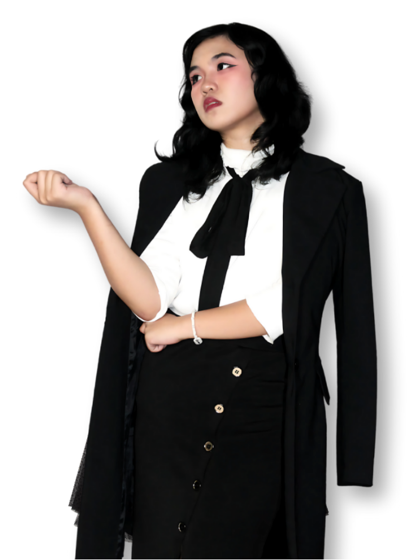

About the Artist
Marionne Audney M. Piol
I am a girl with a passion for art, a drive for excellence, and a hunger for growth.
My web content can be seen as a true reflection of my creativity and passion for art. It should feel inspiring and welcoming, showing not just the finished pieces but also the individual behind them.
Most of all, I want others to view my work as something that not only represents me but also sparks their own ideas and appreciation for art.
So in this online portfolio, you will see my multi-faceted engagement to art and multimedia. Photography, animation, digital illustration, traditional art, and graphic design are skills that I am honing throughout my years.
I hope that you will be able to appreciate the artistry that I have endeavored so far!
Skills
- Graphite Realism
- Colored Pencil Realism
- Graphic and Layout Design
- 2D Animation
- 3D Modeling
- 3D Animation
- Digital Illustration
- Acrylic Painting
- Character Design
- Oil Pastel Painting
- Scriptwriting
- Storyboarding
Journey
Education & Experience
School Background
2023 – Present | Bachelor of Multimedia Arts
STI College Lipa
3rd Year
- Visual Associates of Multimedia Arts Organization Vice President
2nd Year
- Visual Associates of Multimedia Arts Organization President
- APEMERA: Photography Exhibit Event Head
1st Year
- Class Secretary
- Visual Associates of Multimedia Arts Freshman Representative
- Bayani-no? Photography Exhibit Event Head
- NSTP Mural Wall Creation: Student Head
2020 – 2023 | Secondary Education
NEW ERA UNIVERSITY – LIPA BRANCH
- Valedictorian and consistent honor student
- Held leadership roles as Student Council President, Strand Vice President, and Class Vice President
- Served as CBI Info and Liaison Committee Vice Chairperson
Trainings & Seminars
- Leadership Enhancement Seminar – NEULCB '20
- Psychological First Aid Webinar – NEU Main '22
- Discovering and Fostering Your Talent in Visual Arts – NEU SVA '22
- Graphic Design Webinar – NEULCB '22
- Sustainable Fashion and Design Webinar – NEULCB '22
- Basic Photography Seminar – CBI '23
- Beyond the Frame: Multimedia Mastery – STI Lipa '24
- One Vision: One Future – STI Lipa '24
- MMAALAB: MAD Summit – De La Salle Lipa '25
- Anti-Bullying and Safe Spaces Ordinance - STI Lipa '25
- Leadership Training Seminar – STI Lipa '25
- XTRA Mile: MAD Summit – De La Salle Lipa '26
Work Experience & Commissions
- Digital illustration commissions for online multiplayer game avatars
- Website design using Wix for company clients
- Logo design for overseas branding clients
- Traditional acrylic paintings (18x24, 16x20, 16x20)
- Branding designs for collaterals of a brand
- Social media manager, content curation, and advertisement poster designs for social media of a brand. Garnered a 3.2% increase in followers and reach in the span of only 3 weeks